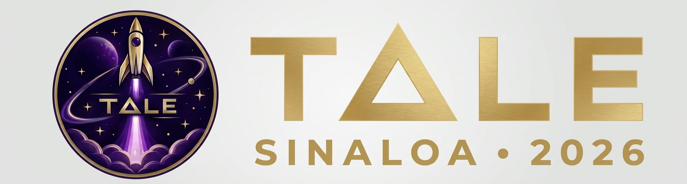
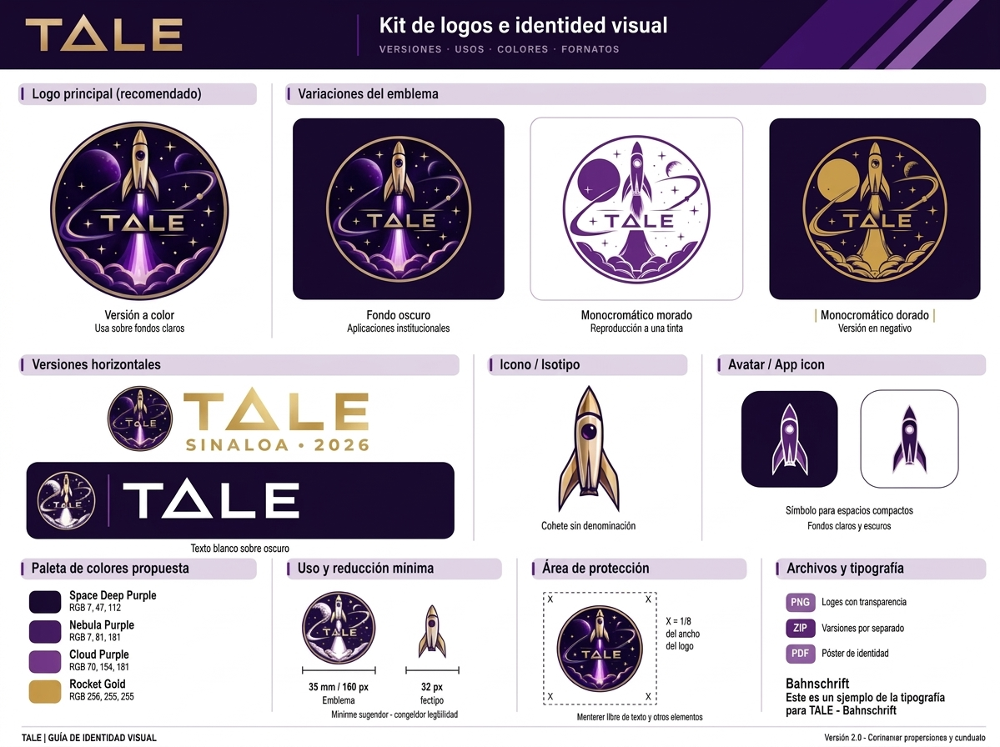

01 / EMBLEMA
Descargar PNG ↓Logotipo principal
Versión circular a color con fondo transparente.
RECURSOS TALE
Explora los archivos originales que forman parte de la identidad de TALE Sinaloa 2026.
Versión circular a color con fondo transparente.

Composición horizontal TALE · Sinaloa · 2026.

Lámina de referencia con versiones del emblema, aplicaciones, paleta cromática, tamaños y tipografía.
Todos los recursos están guardados dentro de assets/. Los enlaces de descarga funcionan directamente desde el sitio publicado.